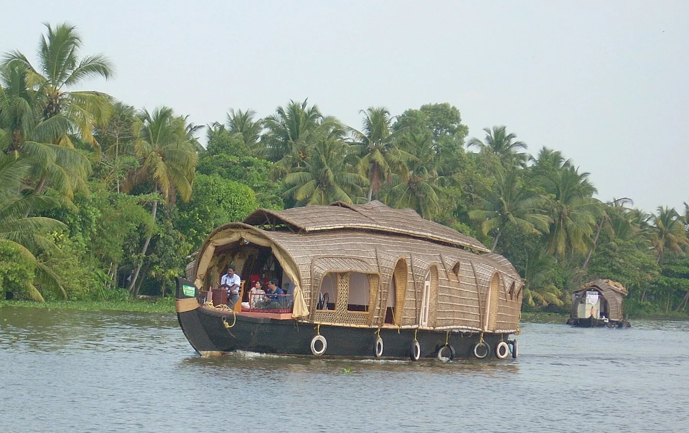
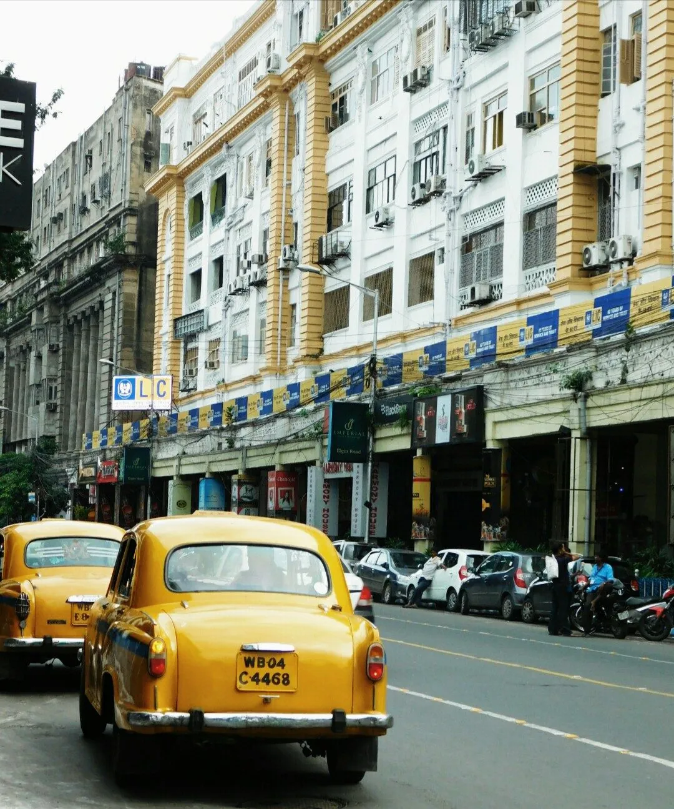
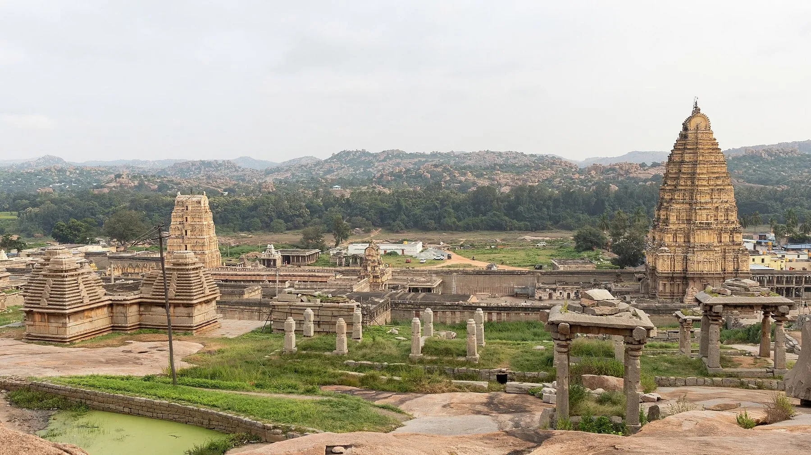
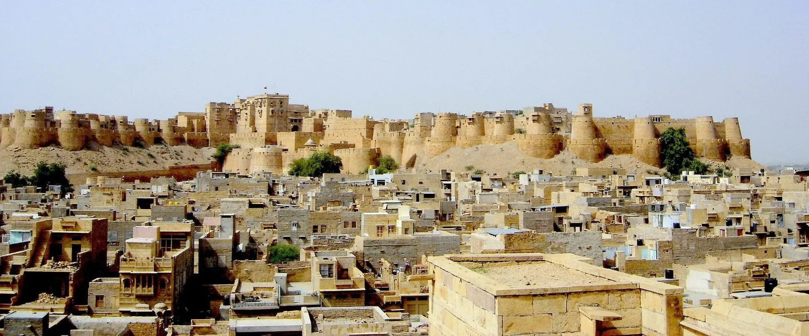
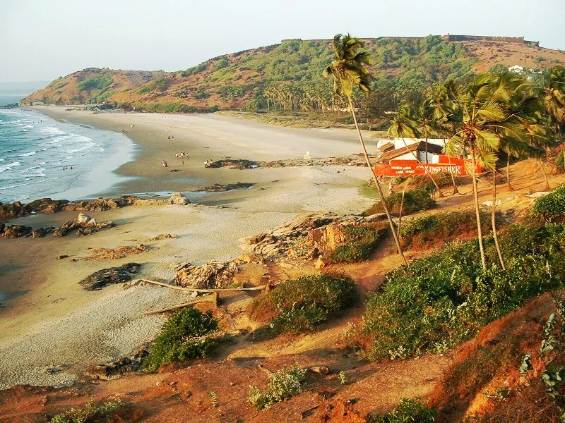

Photography,
with proper credit.
Every photograph is from Wikimedia Commons under the license noted below. Images were resized and compressed; displayed crops vary by screen. These image versions retain their original license.

Taj-Mahal.jpg
Creator: Joel Godwin
CC BY-SA 4.0 · Original source & terms ↗

Web version: resized/compressed, with responsive display cropping. No creator endorsement implied.

HawaMahal-Jaipur.jpg
Creator: Firoze Edassery
CC BY-SA 3.0 · Original source & terms ↗

Web version: resized/compressed, with responsive display cropping. No creator endorsement implied.

ChandBaori.jpg
Creator: Doron
CC BY-SA 3.0 · Original source & terms ↗

Web version: resized/compressed, with responsive display cropping. No creator endorsement implied.

Varanasi ghats at the sunrise.JPG
Creator: Ilya Mauter
CC BY 3.0 · Original source & terms ↗

Web version: resized/compressed, with responsive display cropping. No creator endorsement implied.

Kerala Houseboat.jpg
Creator: P.K.Niyogi
Public domain · Original source & terms ↗

Web version: resized/compressed, with responsive display cropping. No creator endorsement implied.

Tea Fields Of Munnar, Kerala, India.jpg
Creator: Midhun Subhash
CC0 · Original source & terms ↗

Web version: resized/compressed, with responsive display cropping. No creator endorsement implied.

Darjeeling Toy Train at Batasia Loop.jpg
Creator: SupernovaExplosion
CC BY-SA 2.0 · Original source & terms ↗

Web version: resized/compressed, with responsive display cropping. No creator endorsement implied.

Park Street, Kolkata, India.jpg
Creator: Tonyystarcreations
CC BY-SA 4.0 · Original source & terms ↗

Web version: resized/compressed, with responsive display cropping. No creator endorsement implied.

Kala Pathar Beach, Havelock Island, Andaman, India.jpg
Creator: Mvbellad
CC BY-SA 4.0 · Original source & terms ↗

Web version: resized/compressed, with responsive display cropping. No creator endorsement implied.

Complex of Virupaksha Temple, Hampi (04).jpg
Creator: iMahesh
CC BY-SA 4.0 · Original source & terms ↗

Web version: resized/compressed, with responsive display cropping. No creator endorsement implied.

Jaisalmer forteresse.jpg
Creator: Gérard Janot
CC BY-SA 3.0 · Original source & terms ↗

Web version: resized/compressed, with responsive display cropping. No creator endorsement implied.

India Goa Big Vagator Beach with Fort Chapora.jpg
Creator: Dominik Hundhammer
CC BY-SA 3.0 · Original source & terms ↗

Web version: resized/compressed, with responsive display cropping. No creator endorsement implied.